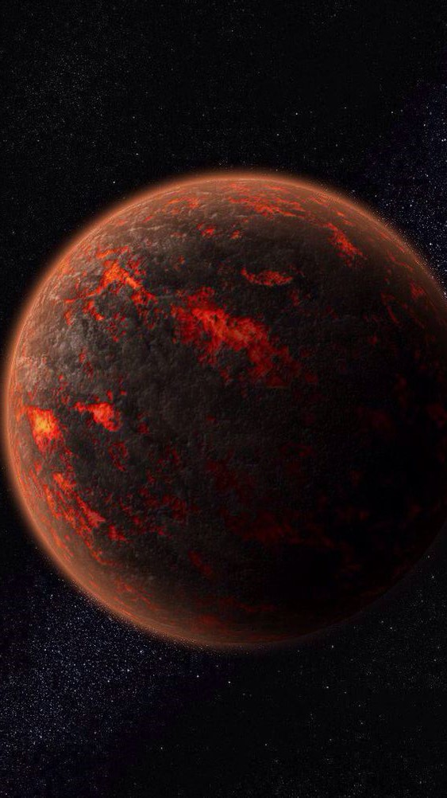

__ 01
__ 02
__ 03
__ 04
_Planet
mars
01____03
Mars is the fourth planet from the sun and the
Second-smallwst planet in the Solor System after Mercury.
Mars ix a terrestrial planet with a thin atmosphere having
surface feature reminiscent both of the impact creator of the
Moon and the velley ,deserts , and polar ice caps of Earth.
_About
_Contact
_Planet